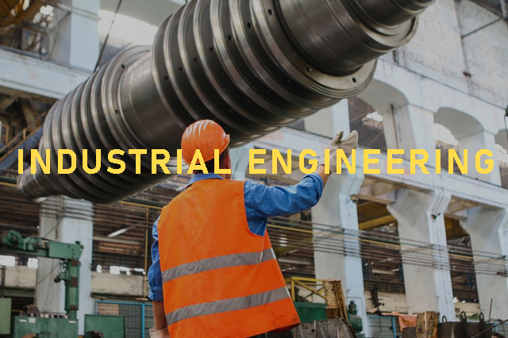
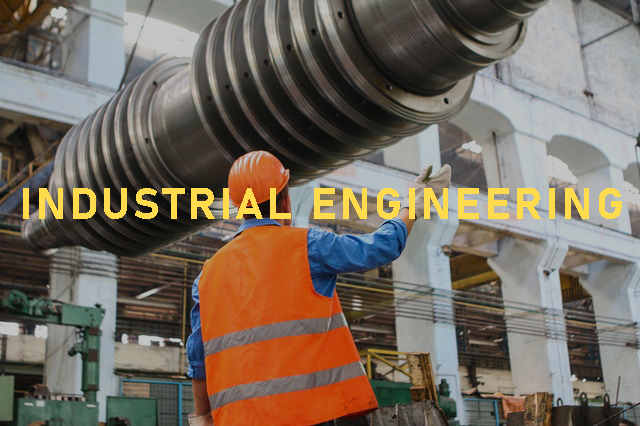

Engineering
Theodore von Karman
Civil Engineering is a professional engineering discipline that deals with the design, construction, and maintenance of the physical and naturally built environment, including public works such as roads, bridges, canals, dams, airports, sewerage systems, pipelines, structural components of buildings, and railways.
Education
College Coursework in Civil Engineering:
Civil engineering curricula will vary from college to college, but below are some of the typical courses a civil engineering student will be required to take depending on the degree type :
ASSOCIATE DEGREES IN CIVIL ENGINEERING
Classes found in an associate level civil engineering program include:
Introduction to surveying
Computer programs for civil engineers
Highway engineering
Soil behavior
BACHELOR’S DEGREES IN CIVIL ENGINEERING
The bachelor’s degree in civil engineering is the minimum requirement for those interested in becoming a civil engineer. Typical classes include:
Introduction to civil engineering
Fluid mechanics and hydraulics
Structural analysis
Structural dynamics
Structural design
Geotechnical engineering
Materials engineering
Transportation engineering
MASTER’S DEGREE IN CIVIL ENGINEERING
The master’s degree is designed to provide students with a means of gaining additional civil engineering knowledge in a particular concentration. Master’s degrees in civil engineering can also provide management training for future leadership positions.
Classes that students may encounter while in a civil engineering master’s degree program include:
- Advanced principles of civil engineering
- Dynamics
- Decision methods for civil engineering
- design
- Risk assessment
- Civil engineering applications and drafting tools
- Fluid mechanics
- Structural design
- Civil engineering materials
- Engineering administration
- Fundamentals of Transportation Engineering
- Airport Engineering
- Solid or Hazardous Waste Management
- Fundamentals of Environmental Engineering
- Fundamentals of Geotechnical Engineering
- Introduction to Geographic Information Systems
- Water Quality Analysis
- Structural Steel Design
- Reinforced Concrete Design
DOCTORATE IN CIVIL ENGINEERING
students can also expect to take a few advanced courses in the civil engineering field. Here is a sampling:
♦Urban Infrastructure
♦Statistics For Civil Engineers
♦Earthquake Engineering
Certifications
Certification is the recognition of attaining advanced knowledge and skills in a specialty area of civil engineering.
Benefits of Certifications
♦ Certification is an advanced qualification beyond licensure recognized by clients, employers, peers, and the public.
♦ Certification provides tangible evidence that an individual has excelled in their specialty field.
♦ Certification demonstrates the attainment of a body of knowledge within a specialty area of civil engineering and commitment to stay current on new technological innovations.
♦ Certification demonstrates a strong commitment to professionalism through its ethics and continuing professional development requirements.
♦ Certification allows civil engineers to maintain significant input into the advanced credentialing process.
♦ Certification provides clients with an assurance that they are engaging highly qualified participants on their projects.
♦ Certification supports the concept of Qualifications Based Selection (QBS).
for listing certification see:click here
PROFESSIONAL EXPERIENCE
It is recommended for new civil engineers to find internships, co-ops, and apprenticeships to apply theories they’ve studied in the classroom and reinforce the following skills and knowledge:
- Business and governmental regulations
- Communication
- Project management
- Professional ethics
- Risk assessment
- Technical savvy
These opportunities also serve students well for future employment, allowing them to network with other professionals, receive mentorship from an established civil engineer, and possibly leverage their experience into a job after graduation.
Civil Engineering Specializations
Construction engineers oversee construction projects to ensure they are built safely, on time, and according to plan.
Construction engineers oversee construction projects to ensure they are built safely, on time, and according to plan.
Environmental engineers develop solutions to environmental problems using engineering, biology, and chemistry. For example, they ensure drinking water is safe, waste is properly disposed of, and the air and waterways are free of pollutants.
Geotechnical and geoenvironmental engineers verify that building projects are suitable for foundations in varying types of soil or rock. They consider slopes and other features and design retaining walls and tunnels, among other structures.
Hydraulic or water resources engineers evaluate and plan for the flow of water and sewage with a mind for gravity and other forces.
Structural engineers design and inspect major construction projects—including dams, bridges, and buildings—to ensure long-term strength.
Transportation engineers plan, design, and maintain transportation systems, including roads, airports, harbors, and mass transit systems.
Skills and knowledge
You'll need:
♦ knowledge of engineering science and technology
♦ maths knowledge
♦ knowledge of building and construction
♦ design skills and knowledge
♦ excellent verbal communication skills
♦ knowledge of the English language
♦ thinking and reasoning skills
♦ the ability to read English
♦ to be able to use a computer and the main software ♦ packages competently
♦ Problem-solving
♦ Organization.
♦ Decision-making
Average Salaries for Civil Engineers:
According to the Bureau of labor statistics, the average salary for a civil engineer is $87,060 per year in the USA . See salary information in your country.
Software Engineering is the systematic application of engineering approaches to the development of software. Software engineering is a branch of computing science
Fields:
♦ Software Design: Software design is about the process of defining the architecture, components, interfaces, and other characteristics of a system or component. This is also called Software architecture.
♦Software Development: Software development, the main activity of software construction: is the combination of programming (aka coding), verification, software testing, and debugging. A Software development process is the definition, implementation, assessment, measurement, management, change, and improvement of the software life cycle process itself. It heavily uses Software configuration management which is about systematically controlling changes to the configuration, and maintaining the integrity and traceability of the configuration and code throughout the system life cycle. Modern processes use software versioning.
♦Software Testing:is an empirical, technical investigation conducted to provide stakeholders with information about the quality of the product or service under test, with different approaches such as unit testing and integration testing. It is one aspect of software quality.
♦Software Maintenance: refers to the activities required to provide cost-effective support after shipping the software product.
Software engineer
A software engineer applies mathematical analysis and the principles of computer science to design and develop computer software. There are many types of software that a software engineer can develop, such as operating systems, computer games, middleware, business applications ,and network control systems.
Steps to be a software engineer
- Get an education: Degree or Coding Bootcamp.
- Do an internship: An internship enables you to gain first-hand exposure of working in the real world. It also allows students to harness the skill, knowledge, and theoretical practice they learnt in university
- Pursue entry-level career opportunities:According to Forbes,software engineering has been rated one of the best entry-level careers available
- Get certified
Studies:
Degrees:
Associate Degree (Two Years)
Classes typically found in software engineering associate degree programs include:
♦ Web Application Development
♦ Operating Systems
♦ Networking
Bachelor of Software Engineering(Four Years):
The course syllabus of software engineering has been heavily debated and still is. Institutions will often offer slightly different course structures, many may have a stronger focus on mathematical foundations for example.
Students of a four-year software engineering course will typically have a similar first year of study as students of Computer Science, including classes such as:
♦ Program design
♦ Computer Systems analysis
♦ Fundamentals of Hardware
♦ Networking
♦ Computer Architecture
♦ Professional Awareness
♦ Mathematics for Computing
♦ Introduction to Databases
♦ Academic skills for computing
Software Engineering Master’s Degree:
Students who enter a master’s degree program in software engineering can expect to cover classes such as these:
♦ Software Design
♦ Software Testing
♦ Software System Architecture
Software Engineering PhD Degree:
There are very few similar class schedules among students in the same program. However, the following courses would likely be helpful in the PhD course list:
♦ Economics Of Software Engineering
♦ Software Engineering For The Internet
♦ Experimentation In Software Engineering
Coding Bootcamp (8 TO 12 weeks):
Coding bootcamps are intensive programs of software development. It's a technical training program that teaches the programming skills that employers look for. Coding bootcamps enable students with little coding proficiency to focus on the most important aspects of coding and immediately apply their new coding skills to solve real-world problems.
If you want a faster, more affordable way than a traditional college degree to start a career in technology, then coding bootcamp is absolutely worth it for most people. Coding bootcamp will get you the tech skills you need in a fraction of the time it would take to earn a computer science degree.
Certifications:
Highly desirable certifications for software engineers may include the following:
- Oracle Certified Associate (OCA): Java SE Programmer
- Oracle Certified Professional (OCP): Java SE Programmer
- Oracle Certified Professional (OCP): Java ME Mobile Application Developer
- CIW Web Foundations Associate
- CIW Web Design Professional
- CIW Web and Mobile Design Professional
- CIW Web Development Professional
Software Engineer Salary
According To Payscale Estimation, Here Are The List 0f The Best-Paying Countries For Software Engineers:
- The average software engineer salary in the USA is $107K.
- The average software engineer salary in Switzerland is $88K per year.
- Software engineer salary in Denmark is $66,878 a year.
- Average Software Engineer in Australia is 61,145.56
- The software engineer salary In Norway is around $60,934.
- The average software engineer salary In UK is $59,072.
- The software engineer salary in Germany is $54,705
- The average software engineer salary in the Netherlands reaches $50,191.
- The average software engineer salary in Canada reaches $51,268.
Important Job Skills for Software Engineers
Computer Coding Languages:
According to hackr.iothe best Programming Languages to learn in 2020 for a job and prospects:
- Python
- Java
- C/C++
- JavaScript
- Go (Golang)
- R
- Swift
- PHP
- C#
- MATLAB
Object-oriented design (OOD):
Object-oriented design encompasses four key principles:
- Abstraction
- Encapsulation
- Inheritance
- Polymorphism
Software testing and debugging
Problem solving and logical thinking:
Being able to not only pinpoint software problems but also use deductive reasoning to solve these issues is crucial to many software engineering jobs.
Written and verbal communication:
- Listening.
- Nonverbal Communication:
Your body language, eye contact, hand gestures, and tone of voice all color the message you are trying to convey. - Clarity and Concision:
Good verbal communication means saying just enough – don’t talk too much or too little. Try to convey your message in as few words as possible.
Think about what you want to say before you say it. This will help you to avoid talking excessively or confusing your audience. - Friendliness:
Through a friendly tone, a personal question, or simply a smile, you will encourage your co-workers to engage in open and honest communication with you. - Confidence:
It is important to be confident in your interactions with others. Confidence shows your co-workers that you believe in what you’re saying and will follow through. - Empathy:
Even when you disagree with an employer, co-worker, or employee, you need understand and respect their point of view. - Feedback:
Being able to give and receive feedback appropriately is an important communication skill. - Organize Your Writing:
List each item you need to discuss in your memo or report.
Put them in order—from most to least important.
Write a summary of your entire memo—this will be your first paragraph.
If any action needs to be taken by the recipient, state that in your closing paragraph.
For More Writing Skills And Training See Rosenberg McKay Tips.
Teamwork
A successful engineer should be comfortable working closely with others, compromising ,and innovating as needed.
Knowing the elements for effective teamwork can help you to build and maintain high-performance teams throughout your organization.
- Collaboration
- Compromising
- Active Listening
- Conflict Resolution
 
